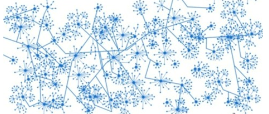

Search engines display pages relevant for your search. But how does it really work?
In the early 90s, the first search engines used text based ranking systems, where the engine counts the occurrences of the key words in each web file. Pages with the highest number of occurrences of the key words were displayed. However, this would not display the best results; e.g. you search " dog " and get a site with the word " dog " a billion times and nothing else.
The usefulness of a search engine depends on the relevance of its results, and one of the best known algorithms for computing the relevance of pages is the PageRank algorithm used by the Google search engine.
PageRank algorithm determines the importance of websites by counting the number and quality of links to a page. It is assumed that more important websites are likely to have more sites linking to it.
The World Wide Web hyperlink structure forms a huge directed graph where nodes represent webpages and edges represent the hyperlinks
Inbound links/backlinks: links to this page from other sites
Outgoing/outbound links: links from this page to other sites
Dangling links: links that point to pages with no outgoing links